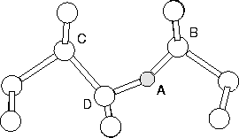

|  |
Suppose that an atom A is hopping from one site to another, during which one bond A-B is broken and the bond A-C is created (see Figure 6.1). Then a constraint is introduced on the relative bond lengths, rA-B and rA-C, and the cluster relaxed maintaining this constraint. The actual constraint used is
| c1 = rA-B2-rA-C2 | (44) |
Now c1 is clearly negative in the configuration where the bond A-B is short and positive in the configuration where the bond A-C has been formed.
The saddle point usually, but not always, corresponds to a value of c1 around zero where the A-B and A-C bond lengths are equal. For interstitial O motion, a constraint is selected so that A, B and C correspond to the O atom and the two Si atoms which swap bonds with O. However, the imposition of one constraint is insufficient [128]. During the hop, the O atom initially bonded to the Si atoms D and B, becomes bonded to D and C. However at the same time the Si atom D also breaks a bond with C and makes a bond with B. To deal with this a second constraint is required. Here,
| c2 = rD-B2-rD-C2. | (45) |
In the initial configuration c1, c2 are both negative but become positive after the hop. The cluster is relaxed using a conjugate gradient algorithm subject to these constraints for a range of values of ci. The saddle point can then be directly found by interpolation on the resultant 2D energy surface.